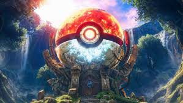

The Pokemon Facts
Dive into the fascinating world of Pokemon with these intriguing facts that will delight both new and seasoned fans. Discover the unique characteristics, origins, and secrets behind your favorite Pokemon!

Dive into the fascinating world of Pokemon with these intriguing facts that will delight both new and seasoned fans. Discover the unique characteristics, origins, and secrets behind your favorite Pokemon!
Pikachu's name is derived from Japanese onomatopoeia: "pika" for the sound an electric spark makes, and "chu" for the sound a mouse makes.
Meowth, a member of Team Rocket, is one of the few Pokemon that can speak human language fluently. He learned to speak and walk on two legs to impress a female Meowth named Meowzie.
Did you know that Bellsprout's dex number is #069!
Cubone is known as the "Lonely Pokemon" because it wears the skull of its deceased mother. The skull it wears makes it look quite different from its evolved form, Marowak.